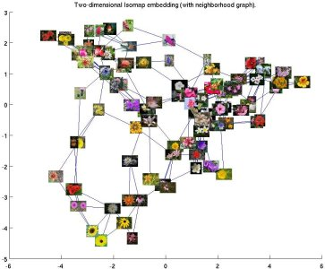
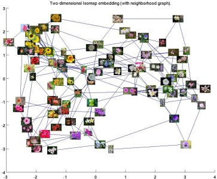

Maria-Elena Nilsback and
Andrew Zisserman
Overview
We have created a 102 category dataset, consisting of 102 flower categories. The flowers chosen to be flower commonly occuring in the United Kingdom. Each class consists of between 40 and 258 images. The details of the categories and the number of images for each class can be found on this category statistics page.
The images have large scale, pose and light variations. In addition, there are categories that have large variations within the category and several very similar categories. The dataset is visualized using isomap with shape and colour features.
Downloads
The data needed for evaluation are:
- Dataset images
- Image segmentations
- 2 distances - As used in the ICVGIP 2008 publication.
- The image labels
- The data splits
The README file explains everything.
Visualization of the dataset
We visualize the categories in the dataset using SIFT features as shape descriptors and HSV as colour descriptor. The images are randomly sampled from the category.
| Shape Isomap | Colour Isomap |
|---|---|
|  |  |
{kind=link}
{kind=link}
Relevant Publication
Nilsback, M-E. and Zisserman, A.
Automated flower classification over a large number of classes
Proceedings of the Indian Conference on Computer Vision, Graphics and Image Processing (2008)
Bibtex source |
Abstract
| Document:
ps.gz
PDF